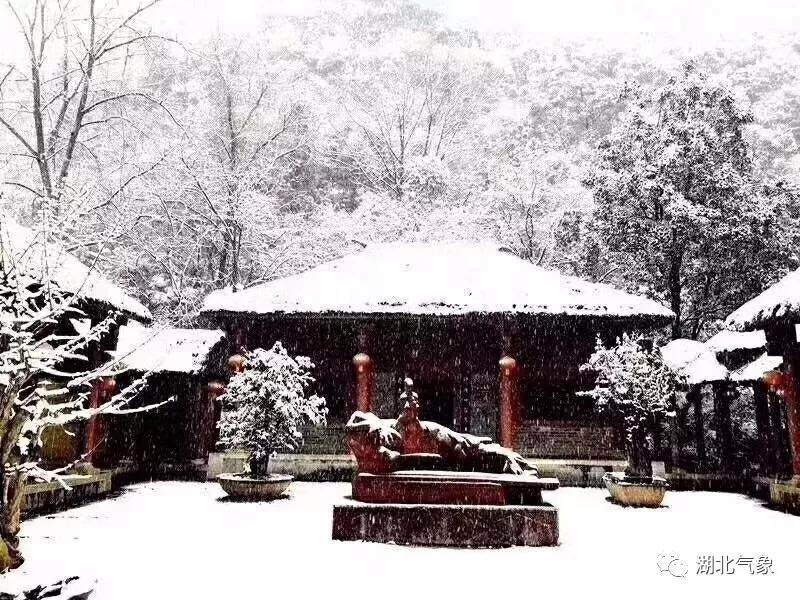

今夜 这座城市做好了下雪的准备
摘要：绵绵的中雨、小雨已经下了两天了，路面都湿得不能再湿。气温已经很低了，让人不忍将双手伸出来受冻。路上行人穿着厚厚的棉袄，围巾围在脖子上，或者将棉袄的帽子戴在头顶上。当然，还得打着雨伞，既挡雨，也挡风。
绵绵的中雨、小雨已经下了两天了，路面都湿得不能再湿。气温已经很低了，让人不忍将双手伸出来受冻。路上行人穿着厚厚的棉袄，围巾围在脖子上，或者将棉袄的帽子戴在头顶上。当然，还得打着雨伞，既挡雨，也挡风。把下雪天的装备将自己全副武装起来，甚至武装到牙齿，给自己也把口罩戴上。
吃罢晚饭，我照例去磁湖边走步。湖边少有行人，眼睛所到之处，很难看到人影。湖风微微地吹，虽然不大，但却很冷。枯黄的树叶子从树上飘落下来，仿佛是金黄色的雪花一般，稀稀落落地铺在行人道上。一个人走在湖边，什么都可以想，什么都可以不想，静静地听着自己的脚步踩着树叶的声音，卡嚓卡嚓的，好希望自己是踩在雪地上。如果是在洁白的雪地上，就自己一个人在行走，卡嚓卡嚓的，那情景不知道有多美，心情也不知道会有多好。就这样想着，好象雪真的要下来了，那灯光照着的飘洒的小雨，仿佛象是小雪花似的下着。

我照例还是在湖边的5000步处返回。然后，象这个城市里大多数的居民一样龟缩在家里。天气预报说，今夜到明天，我生活的这个城市有雪。实际上，昨天，湖北的很多城市都下雪了，而襄阳成了今年湖北省第一个下雪的城市，那积雪厚厚的，甚至把树枝都压弯了。凭什么呀？我生活的黄石，对下雪天的准备丝毫都不比襄阳少，为什么那厚厚的雪就下到了别人的城市呢？说来自己生活的城市差不多有十余年没下这种厚厚的大雪了，今夜，黄石会不会这么痛痛快快地下一场雪呢？今夜，黄石已经准备好了，雪，你会来么？